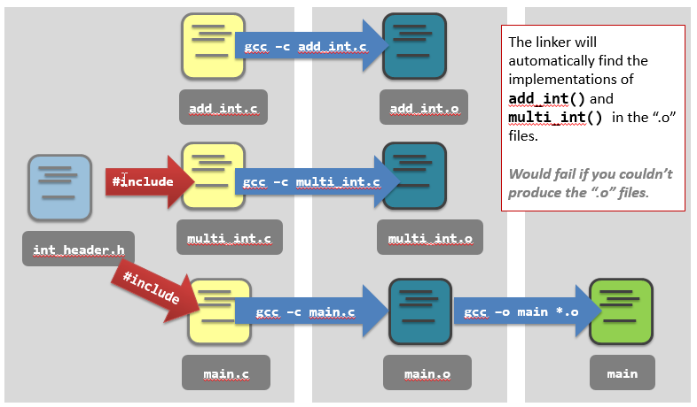

Organizing a C Project
It is a good practice to manage groups of C files in an organized manner. It will be much easier to design, implement and maintain :)
The key point is to separate the function declarations and definitions into multiple files (Not a single C file)
Consider the following scenario :
we have two functions, namely add_int() and multi_int(),
The best practice is to put the declarations into header files:
int_header.h- Declaration of the function prototypes of
add_int()andmulti_int().
- Declaration of the function prototypes of
Then put the definitions into seperate C files:
add_int.c- Definition of the function
add_int()only.
- Definition of the function
multi_int.c- Definition of the function
multi_int()only.
- Definition of the function
Finally invoking the functions in the main function.
// main.c
#include <stdio.h>
int main(void) {
printf("3 + 10 = %d\n", add_int(3, 10));
printf("3 * 10 = %d\n", multi_int(3, 10));
return 0;
To compile it using:
gcc -Wall -c -o main.o main.c
It will show warnings:
As the OS cannot find the definition of add_int() and multi_int(). You have to add the #include:
// main.c
#include <stdio.h>
#include "int_header.h"
int main(void) {
printf("3 + 10 = %d\n", add_int(3, 10));
printf("3 * 10 = %d\n", multi_int(3, 10));
return 0;
So the pre-processor (still remember?) will expand the #include.
To sum up, to compile a large C project, one of the ways is:
